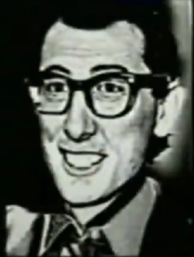

Felix Kranken in 1962, would found the Bunny Smiles Company. to pursue the dream of animatronic tech. In 1964, Felix's drinking habits worsen for a currently unknown reason, described by Linda in her diary. In mid August 1965, Linda would start living in Felix's home, officially moving in. in 1965, Felix and Jack pitched the animatronic idea to Cyberfun Tech who were interested in their project.